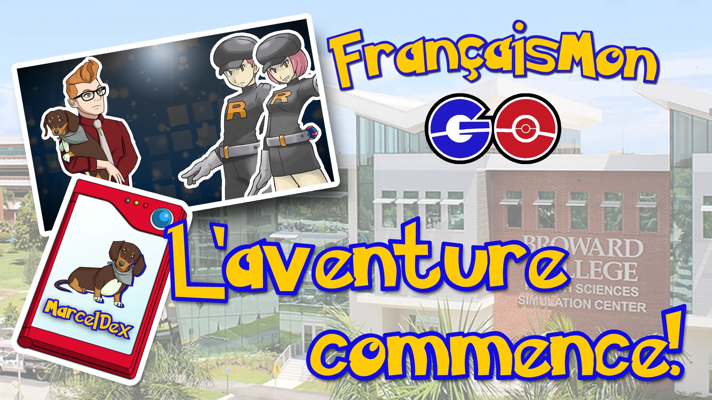
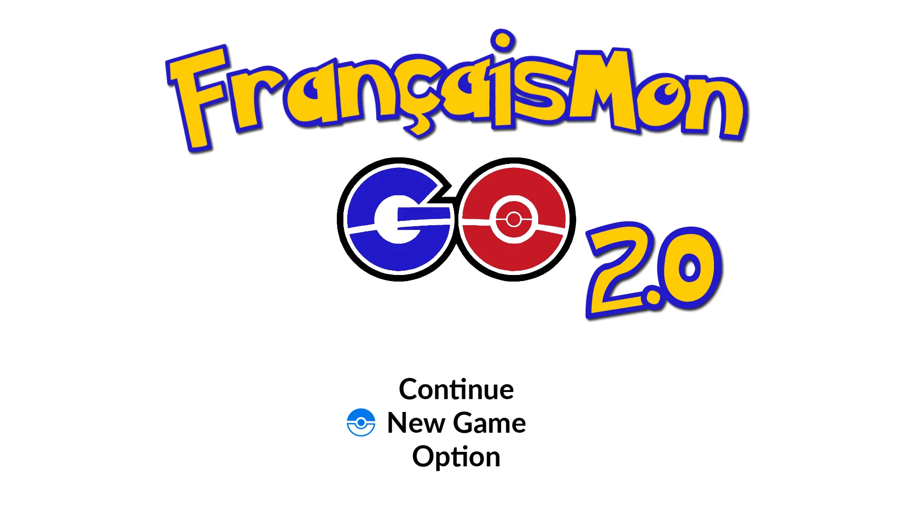
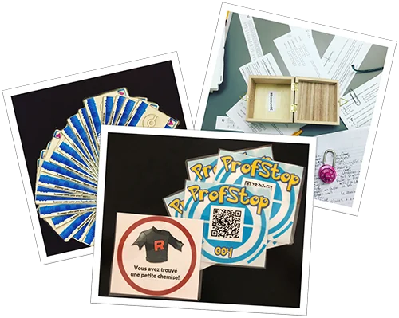
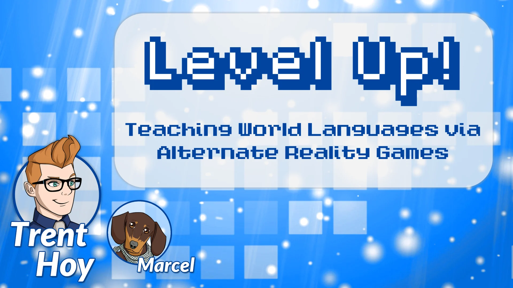
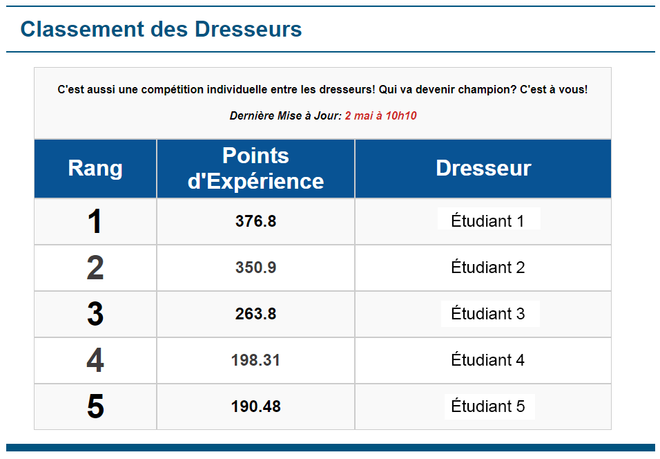
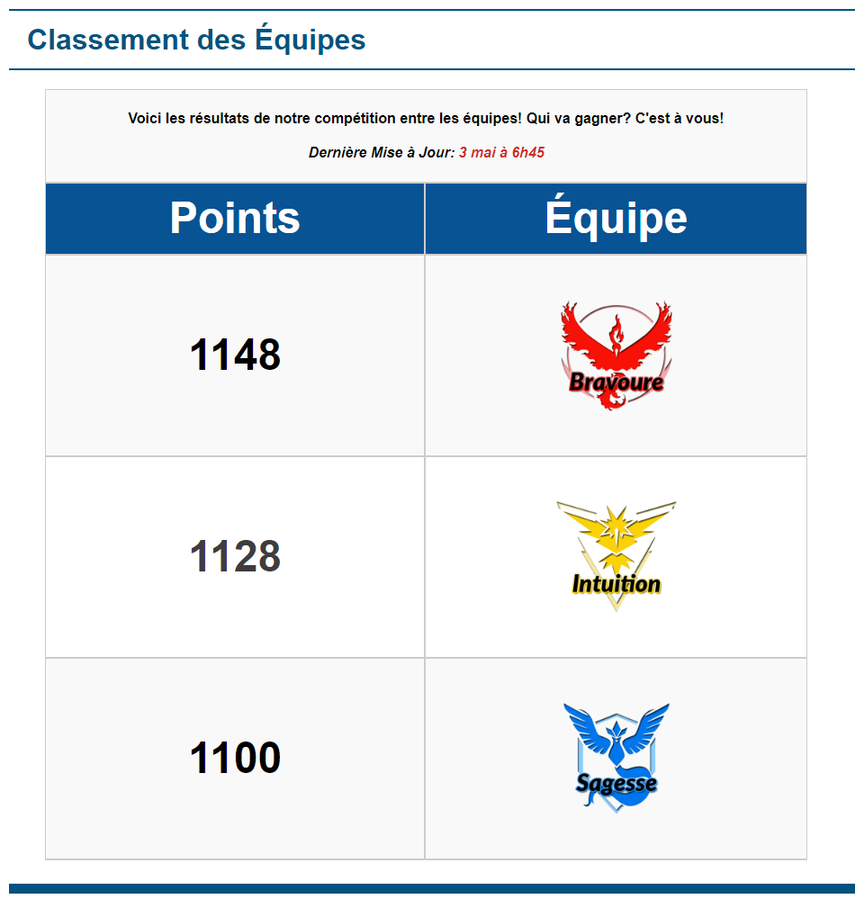
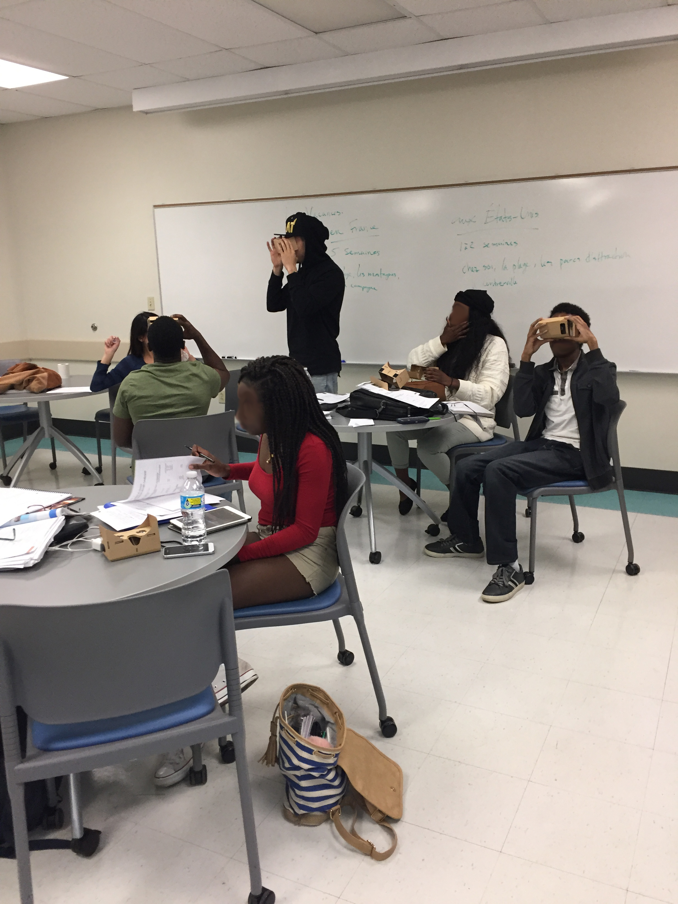
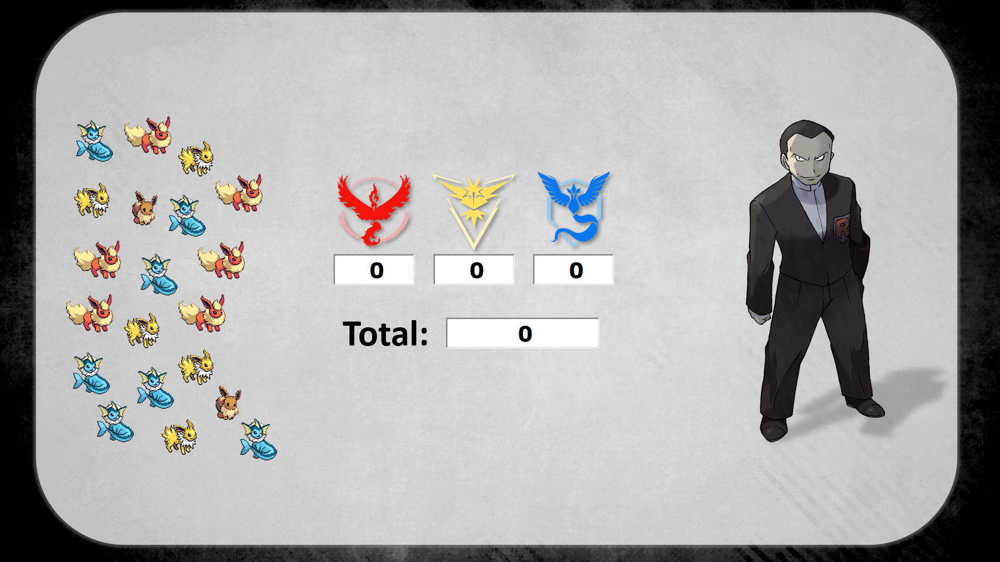

Need
Turn end-of-term review—and later a full unit of course content—into active, communicative practice that invited learners to explore.

At a glance
Turn end-of-term review—and later a full unit of course content—into active, communicative practice that invited learners to explore.
A campus-spanning experience combining story episodes, ProfStops, QR activities, physical materials, teams, rewards, and curriculum-aligned missions.
The original activity became a professional-development experience and then a substantially expanded, curriculum-integrated 2.0 version.
This project taught me the difference between adding a theme and designing a coherent gameful experience through testing, feedback, and iteration.
Methods & tools: Web and print design · QR activities · Game design · Live facilitation
The original end-of-term campus review became a professional-development experience and then a six-episode unit woven directly into Beginning French II.
Learners completed communicative missions, explored campus locations, scanned QR-linked ProfStops, gathered story clues, and developed a partner character through progress and rewards.
The first full student implementation, including its introduction, MarcelDex, FAQ, instructor guide, and original story materials.
Explore the archive ↗The expanded three-week version with episodes, ProfStops, maps, learner profiles, leaderboards, and physical materials.
Explore version 2.0 ↗A guided overview of the design for educators interested in adapting the approach.
Open the overview ↗A presentation documenting the structure, materials, and evolution of the experience.
View presentation ↗Scroll or swipe to explore more →




Scroll or swipe to explore more →







